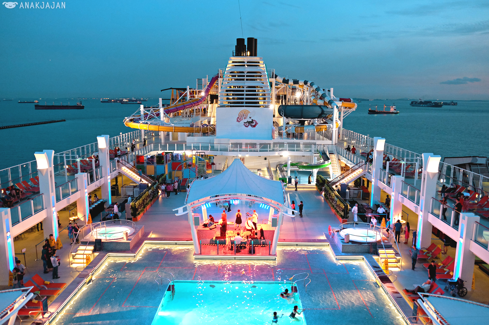

Asian Cruise
 Set sail into Southeast Asian horizons from Singapore, the perfect starting point for your regional adventure. Located at the heart of the region, the city-state is a cruise hub where several leading cruise lines dock. It’s a convenient way to get around Southeast Asia—with luxurious amenities and an array of activities aboard that make travelling a fun experience in itself. Both Marina Bay Cruise Centre and the Singapore Cruise Centre are located close to Singapore’s top attractions, making it easy for cruise travelers to explore the city right before they head off to sea or from the moment they disembark.